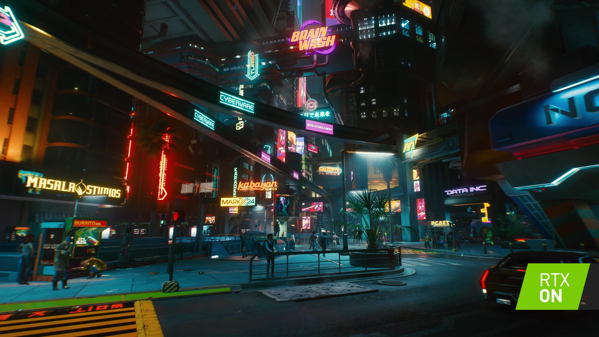
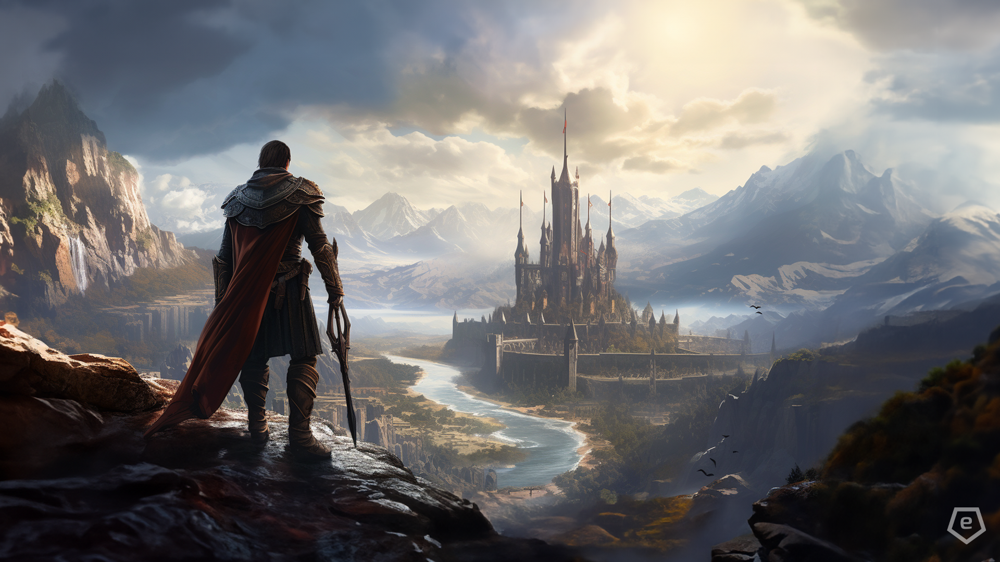

Игры недели
Cyberpunk
Оценка: 9/10
В Cyberpunk 2077 игроки погружаются в живой и опасный мегаполис Найт-Сити, наполненный технологическими инновациями и социальными противоречиями. Игра предлагает открытый мир с кинематографическим сюжетом, где они могут персонализировать своего героя, улучшать его кибернетические улучшения и взаимодействовать с разнообразными персонажами в погоне за влиянием и выживанием.
Resident Evil 4 Remake
Оценка: 8.5/10

Resident Evil 4 Remake представляет собой обновленное воплощение культового хоррора с элементами выживания. Игроки вновь встречаются с Леоном Кеннеди, отправляясь в сельскую деревню в Европе, зараженную мистическим злом. Игра обещает улучшенные графику, звуковое оформление и управление, а также сохраняет напряженную атмосферу и интенсивный бой, за которые полюбили Resident Evil.
Baldur's Gate 3
Оценка: 9.5/10
Baldur's Gate 3 - это ролевая игра, разработанная по миру Dungeons & Dragons, где игроки отправляются в эпическое приключение в магическом мире Забытых Королевств. С фантастической графикой и увлекательным сюжетом, игроки могут создавать своих уникальных персонажей, взаимодействовать с разнообразными расами и классами, а также выбирать свой путь в мире, где каждое решение имеет последствия.